Bütün menüler (Görevler, Hedefler, Mağaza, Çaycı, Ayarlar) aynı kabuğu paylaşıyor; seçilen biçim hepsine birden uygulanır. Her aday aynı oyun durumunda üç ekranda gösterildi: Görevler · Çaycı · Mağaza. Yalnız kabuğun biçimi değişiyor (nasıl açıldığı, başlık, geri/kapat, cüzdanın yeri); kartlar ve renkler bugünkü gibi.
Beğenmediklerini ele, kalanları sohbette yaz; parçalar birleşebilir (ör. "B'nin alt sayfası + D'nin ✕'i"). Büyütmek için resme dokun. Sol üstteki gri "DEV" yazısı yalnız geliştirme sürümünde var.
Tam ekran, oyun tamamen kapanır; geri solda, cüzdan sağda. Karşılaştırma için.
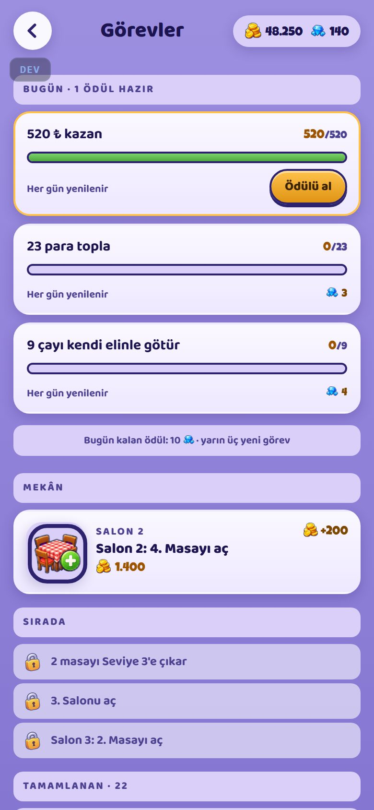
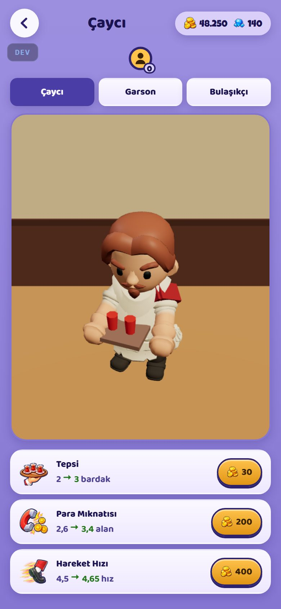
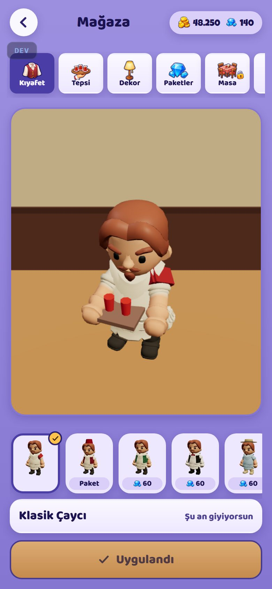
Menü aşağıdan açılır, ekranın %84'ü; üstte oyun ve paran görünmeye devam eder. Boyu her ekranda aynı.
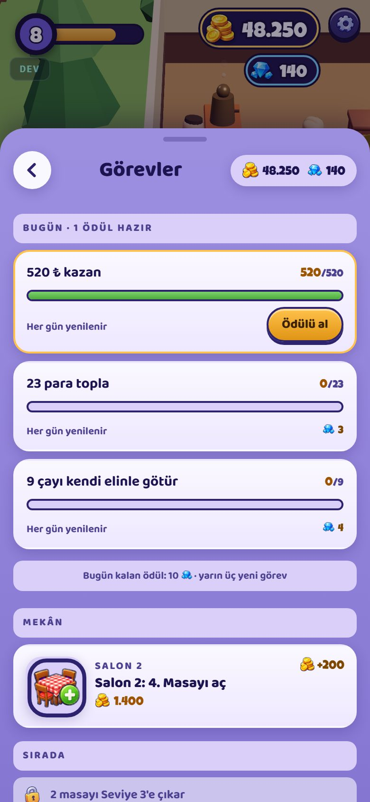
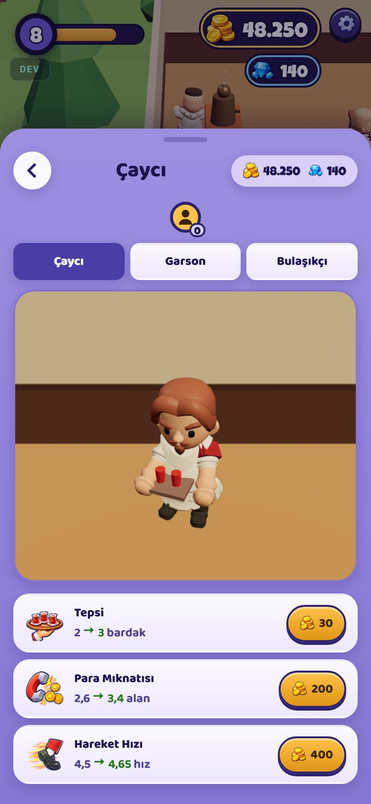
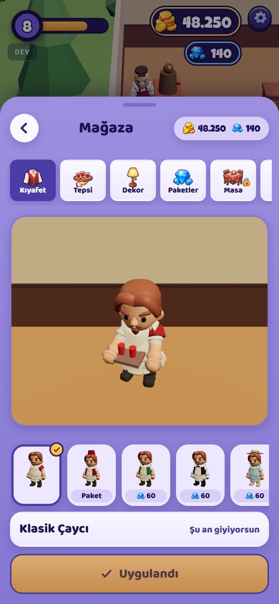
Başlık kısmı oyundaki mor çubuklar gibi koyu bir bant; gövde açık.
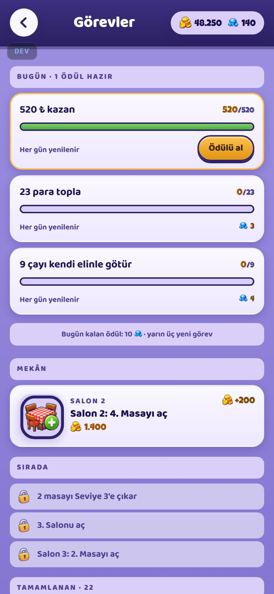
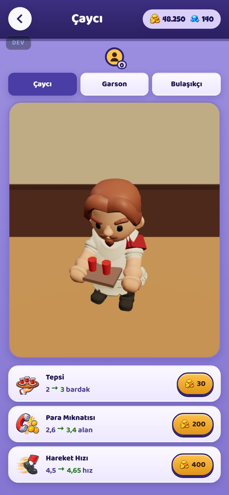
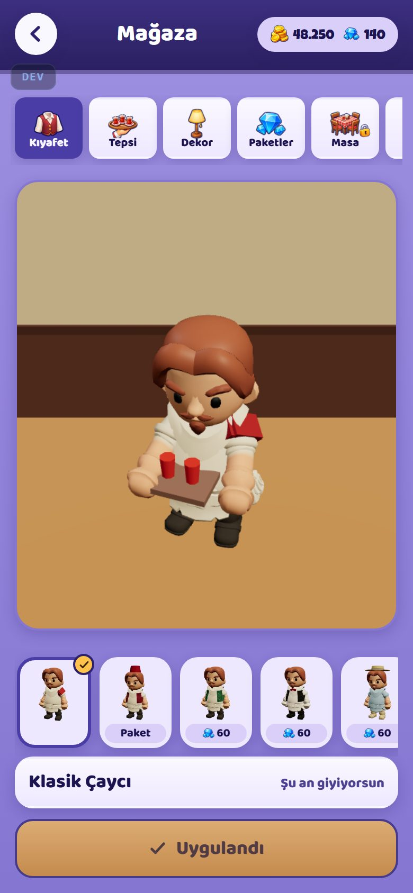
Başlık tam ortada, sağ üstte ✕; cüzdan başlığın altında.
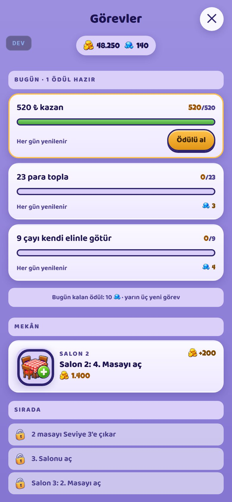
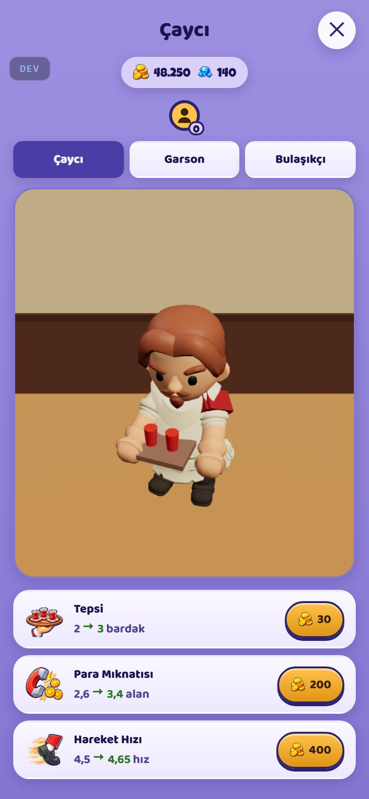
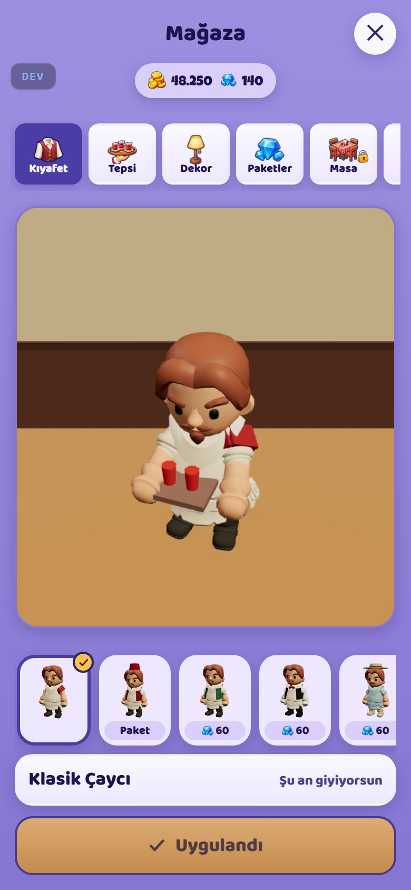
Kenarlardan boşluklu pencere, başlık üstte taşan sarı kurdele; arkada oyun karartılı.
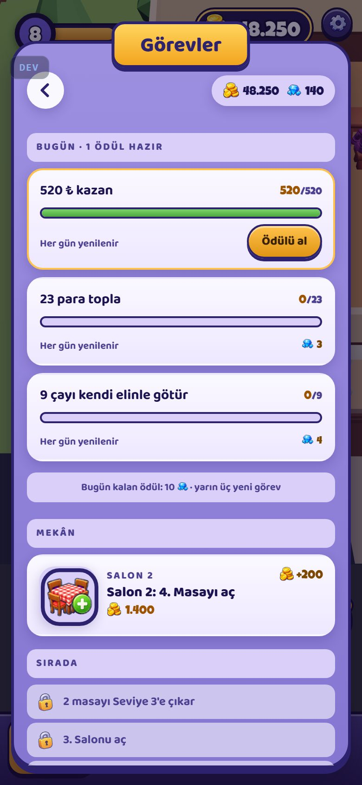
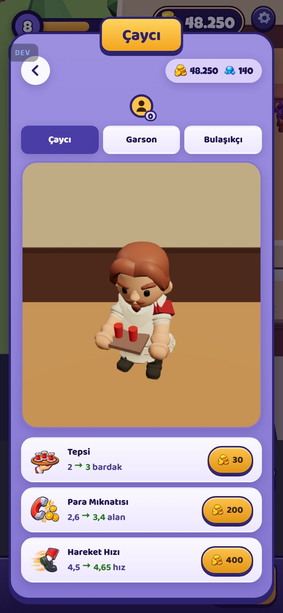
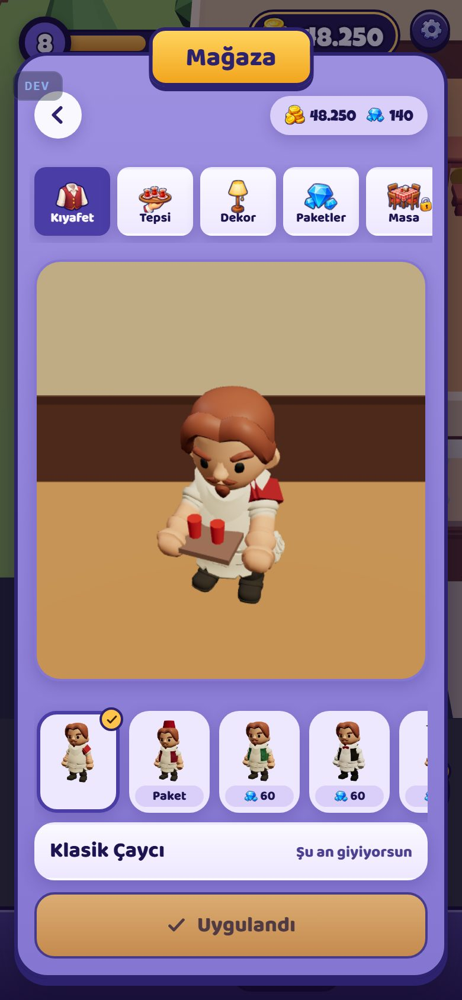
Menü açıkken alttaki Görevler/Hedefler/Mağaza/Çaycı çubuğu görünür; ekranlar arası tek dokunuşla geçilir, geri düğmesi yok.
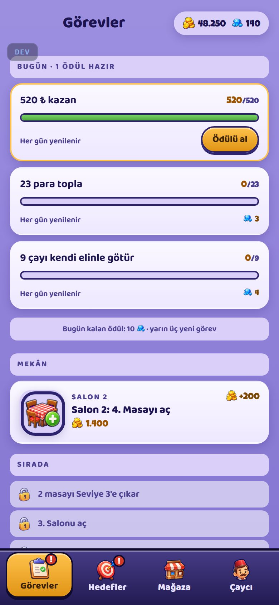
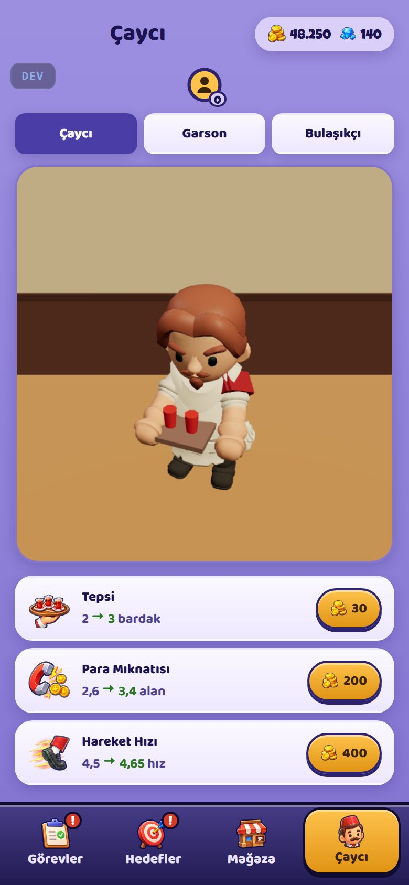
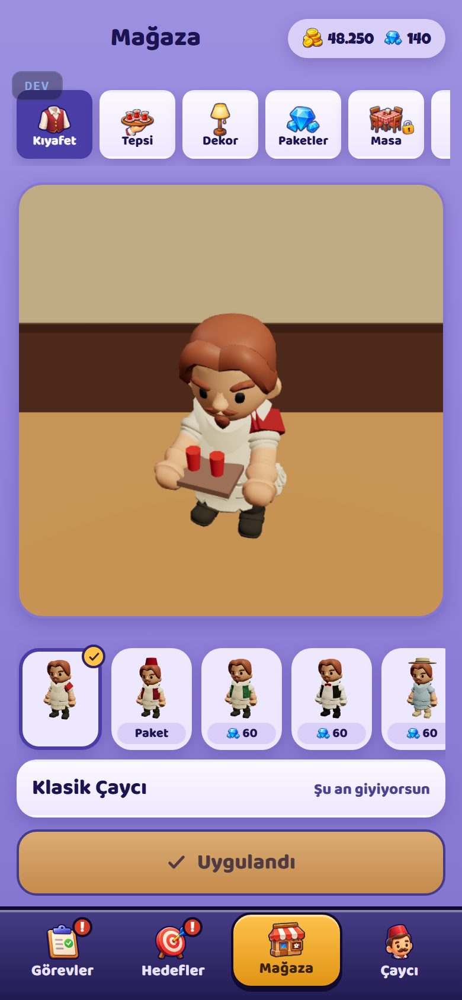
Üstte geri + cüzdan, altında büyük başlık (telefon ayarları gibi).
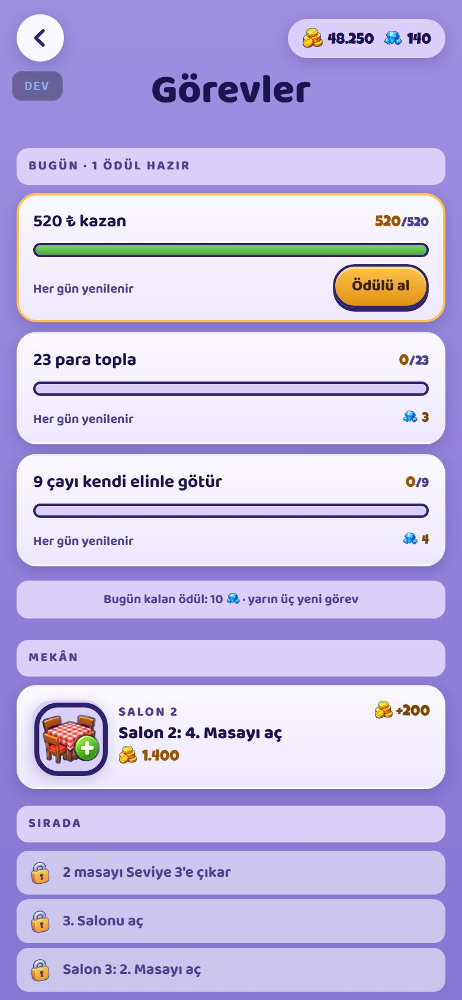
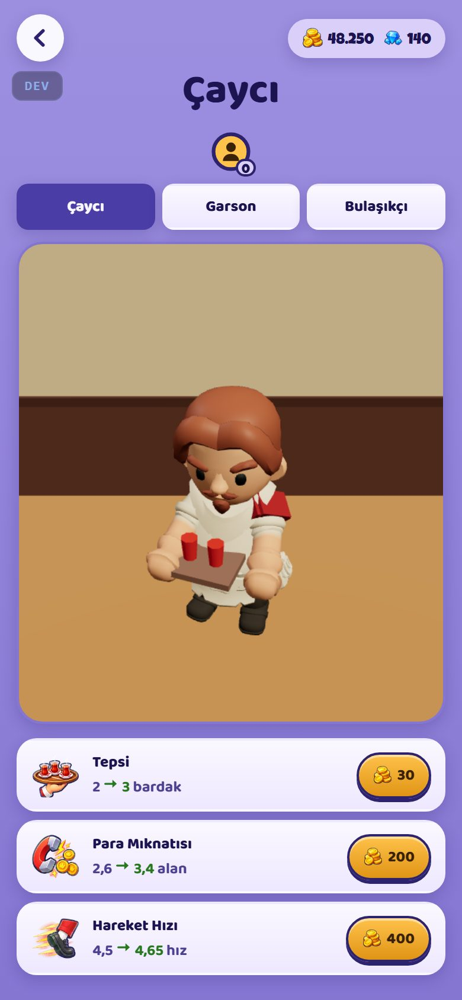
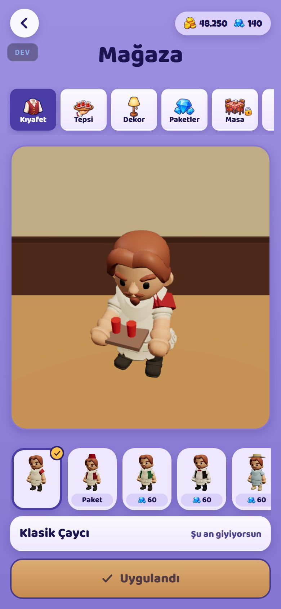